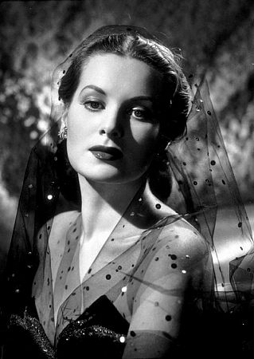
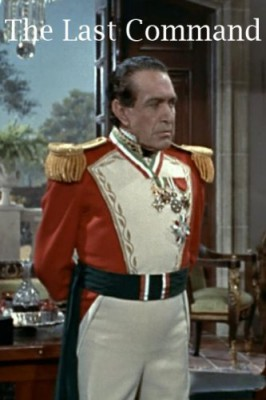
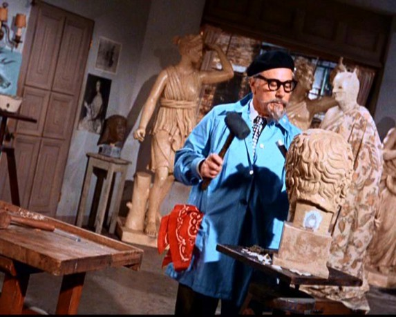

#3551 Rio Grande


 IMDB-Wertung: 7.2 / 10
IMDB-Wertung: 7.2 / 10  Metascore: 0
Metascore: 0 
Kirby Yorke (John Wayne) ist Kavallerieoffizier in einem texanischen Fort. Seine Aufgabe ist es, den Südwesten für Ansiedler zu sichern und die Überfälle der Apachen einzudämmen. Aber die Regierung der Vereinigten Staaten hat mit Mexiko ein Abkommen getroffen, wonach die Streitkräfte der Union den Grenzfluß Rio Grande nicht passieren dürfen. Dies bedeutet, dass die Indianer jederzeit in Mexiko Unterschlupf finden. Für Yorke gibt es nur eine Möglichkeit, die Indianer zu überwältigen: Er muß den Rio Grande überschreiten. In dieser schwierigen Situation tauchen auch noch Kirbys Frau und sein Sohn Jeff, die er seit 15 Jahren nicht gesehen hat, im Fort auf...
Jahr: 1950
Dauer: 101 Minuten
FSK: 12
Land: USA Studio: ITonspuren: DD2.0 - ,
Untertitel:
Auflösung: 1080p (1456x1080) Größe: 7669 MB
Genre: Western, Liebe
Regisseur: John Ford
Drehbuch: Ron Leavitt
Soundtrack:
Darsteller:
 John Wayne als Lt. Col. Kirby Yorke
John Wayne als Lt. Col. Kirby Yorke-  Maureen O'Hara als Mrs. Kathleen Yorke
 Ben Johnson als Trooper Travis Tyree
Ben Johnson als Trooper Travis Tyree- Claude Jarman Jr. als Trooper Jefferson 'Jeff' Yorke
 Harry Carey Jr. als Trooper Daniel 'Sandy' Boone
Harry Carey Jr. als Trooper Daniel 'Sandy' Boone Chill Wills als Dr. Wilkins, regimental surgeon
Chill Wills als Dr. Wilkins, regimental surgeon-  J. Carrol Naish als Lt. Gen. Philip Sheridan
- Victor McLaglen als Sgt. Maj. Timothy Quincannon
- Grant Withers als U.S. Deputy Marshal
 Ken Curtis als Donnelly - Regimental Singer , uncredited
Ken Curtis als Donnelly - Regimental Singer , uncredited Patrick Wayne als Boy , uncredited
Patrick Wayne als Boy , uncredited- Sons of the Pioneers als Regimental Musicians
- Peter Ortiz als Capt. St. Jacques
 Steve Pendleton als Capt. Prescott
Steve Pendleton als Capt. Prescott- Karolyn Grimes als Margaret Mary
-  Alberto Morin als Lieutenant
- Stan Jones als Sergeant
- Fred Kennedy als Trooper Heinze
- Tommy Doss als Regimental Singer , uncredited
- Hugh Farr als Regimental Singer , uncredited
- Karl Farr als Regimental Singer , uncredited
- Shug Fisher als Regimental Singer / Bugler , uncredited
 Cliff Lyons als Soldier , uncredited
Cliff Lyons als Soldier , uncredited- Lee Morgan als (uncredited
- Jack Pennick als Sergeant , uncredited
- Lloyd Perryman als Regimental Singer , uncredited
 Chuck Roberson als Officer / Indian Who Fires Arrow Into Col. York's Chest , uncredited
Chuck Roberson als Officer / Indian Who Fires Arrow Into Col. York's Chest , uncredited- Barlow Simpson als Indian Chief , uncredited
Datei: X:\HD-Western-Collections\John Wayne\Rio Grande (1950, FSK12, 1456x1080).mkv seit 28.04.2016
Festplatte: HD Eastern+Western
 Es gibt insgesamt 34 Filme in der Gruppe 'HD-Western-Collections\John Wayne'
Es gibt insgesamt 34 Filme in der Gruppe 'HD-Western-Collections\John Wayne'